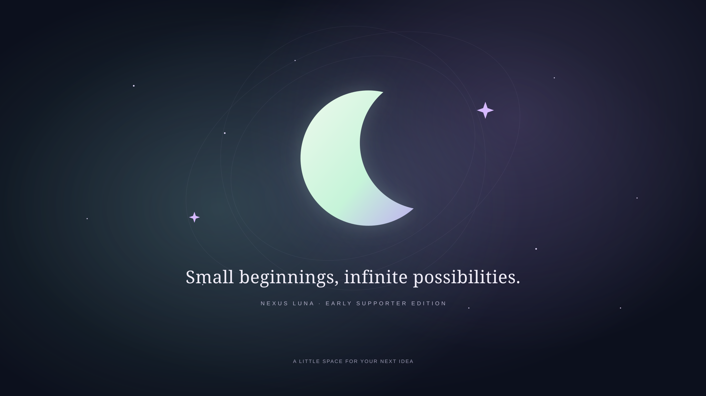

01
AI Starter
Prompt Builder
Shape an idea into a clear prompt with a role, goal, context, and output.
Your structured prompt will appear here.
A thank-you for being here early
Your first idea deserves a first step. Here's a box of useful tools, worked prompts, and a project you can make your own.
01 / A little direction
Twenty starting points for learning, coding, planning, and getting unstuck. Replace the brackets, then use a prompt with your preferred AI tool. Examples are illustrative, not live AI responses.
20 prompts to make a start.
No prompts found. Try another word or choose All.
02 / Your first little build
A tiny daily goal tracker, a working example, and a five-step walkthrough. Take it apart. Make it yours.
A preview of your first project
Add a goal. Complete it. Learn how the pieces work.
Open the working project ↗Download the editable project ↓Plain HTML + CSS + JavaScript · No install · Keeps goals in this browser
Your 30–45 minute walkthrough
0 of 5 stepsChange the heading, save, and reload. Your words, your first change.
{ "title": "Read one page", "done": false }Try <b>Read</b>. It appears as text because the code uses textContent.
Your goals stay in this browser, not in the cloud.
Next mission: add a “Hide completed goals” filter. The full walkthrough has hints.
03 / Your everyday toolkit
Seven everyday helpers. Try them here or in the downloaded pack.
AI Starter
Shape an idea into a clear prompt with a role, goal, context, and output.
Your structured prompt will appear here.
Command Pocket
A few everyday commands, with a plain explanation of each.
Communication
A friendly local template to help you find your first few words.
Your e-mail starter will appear here.
Local productivity
Write a next step, move it along, and see what you have finished. Saved in this browser.
Developer helper
Validate, format, or minify JSON. It all happens in your browser.
Ready.
First project
A small path from an idea to a first project you can show someone.
0 of 7 complete
Tiny challenge
Something small to try when you don't know what to build next.
Let Luna choose your next little mission.
04 / A little something just for you
That means something. Here's a thank-you, a moonlit theme, and a little piece of Luna for your screen.
A NOTE FROM LUNA
Thank you for being here while the ideas are still small and the possibilities are wide open.
I hope this little pack gives you a useful starting point, a moment of curiosity, and the confidence to make something of your own.
You don't have to build something big. Just start with something that matters to you.
With love,
Luna ☾
Your early supporter theme
Choose a mood. We'll remember it in this browser.

A small piece of Luna
Original wallpaper, in desktop and phone sizes.
Prefer a vector? Desktop SVG · Phone SVG
The idea behind it
This little pack brings together practical ideas for learning, creative tools, and everyday projects. Start with one useful thing, learn how it works, and make it your own.